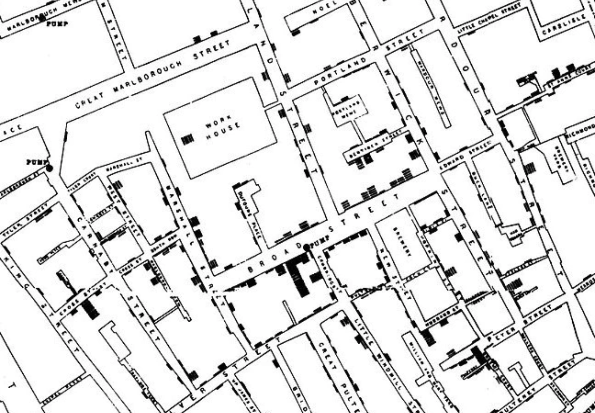
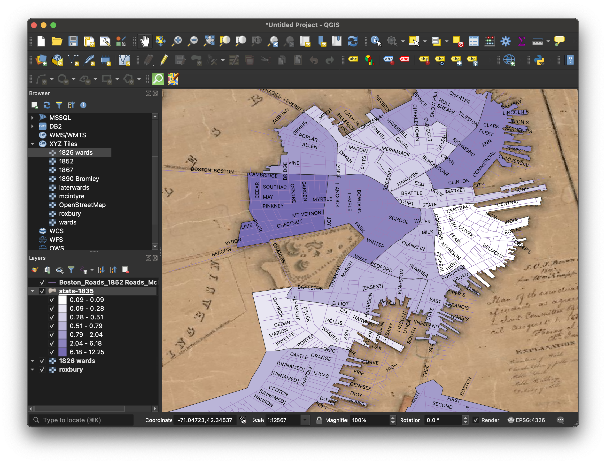

Getting started mapping

John Smith's 1635 map of New England.
Map credit: Daniel Huffman.
Unintentional arguments
Exploring data
John Snow's famous 1854 cholera map.
Exploring data
Boston census tables from 1835.
Exploring data
Geographic data exploration of where Black population lived in Boston in 1835.
Exploring data

Dataset showing occupations of African American population in Boston 1826-1860.
Exploring data
You can get help learning to use tools like Tableau from the Harvard Libraries Data Visualization Support.
Exploring data
You can get help learning to use tools like Tableau from the Harvard Libraries Data Visualization Support.
Brainstorming visual arguments
"What is the main message I want a reader to take away from my map?
Being deliberate
Different cartographic elements
Symbology
Nominal vs. numerical data.
Symbology

Different representational styles
Exploring data HGL + digital collections
QGIS - bringing data into the program (advertise guides)
Without mapping software
Storymaps - "polished" vs scroll fatige, power of a static map
Screenshots
Map by student Isabel Giovanetti.
Screenshots

Map by student Isabel Giovanetti.
Hand-drawn

Map by student Youmna Chamieh.
Talk to us! OSM extract + historic map example?